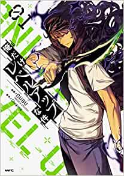

漫画＆アニメ
- ・漫画
- 俺だけレベルアップな件

- 概要
- 『俺だけレベルアップな件』は、原作・原案Chugong、作画DUBU（REDICE STUDIO）による韓国の小説、漫画、ウェブトゥーン。略称は「俺レベ」。
- あらすじ
- 物語の舞台は十数年前に異次元と現世界を結ぶ通路、ゲートが現れた世界。ゲートの出現以降、ハンターと呼ばれる覚醒者たちも出現し、ゲート内のダンジョンに潜むモンスターを倒して対価を得ていた。しかし、すべてのハンターが強者とは限らず、人類最弱兵器と呼ばれるE級ハンターの水篠旬は、母の高額な治療費を稼ぐためハンターを続けていた。
そんなある日、旬は他のハンター達と共にD級ダンジョンに隠された高難易度の二重ダンジョンに迷い込んでしまう。その最奥で死に瀕するが、何らかの条件を乗り越えた末、「システム」によって特別な能力を授かる。それ以降、他人には見えないデイリークエストをクリアしたり敵を撃破したりして『自分だけがレベルアップする能力』を得たことにより、旬の未来は大きく変わっていく。
- －－－－－－－－－－－－－－－－－－－－－－－－－－－－－－－－－－－－－－－－－－－－－－－－－－－－－－－－－－－－－－－－－－－－－－－－－－－－－－
- すぐご覧になりたい方はこちらから見れます。
ピックマ
ライン漫画
- また来年の2023年にはアニメ化されるのでテレビアニメ公式サイトもご覧に！！
テレビアニメ公式サイト